Chapter Three
Current Electricity
Current Electricity

3.1 Introduction
In Chapter 1, all charges whether free or bound, were considered to be at rest. Charges in motion constitute an electric current. Such currents occur naturally in many situations. Lightning is one such phenomenon in which charges flow from the clouds to the earth through the atmosphere, sometimes with disastrous results. The flow of charges in lightning is not steady, but in our everyday life we see many devices where charges flow in a steady manner, like water flowing smoothly in a river. A torch and a cell-driven clock are examples of such devices. In the present chapter, we shall study some of the basic laws concerning steady electric currents.
3.2 Electric Current
Imagine a small area held normal to the direction of flow of charges. Both the positive and the negative charges may flow forward and backward across the area. In a given time interval t, let q+ be the net amount (i.e., forward minus backward) of positive charge that flows in the forward direction across the area. Similarly, let q– be the net amount of negative charge flowing across the area in the forward direction. The net amount of charge flowing across the area in the forward direction in the time interval t, then, is q = q+– q–. This is proportional to t for steady current and the quotient
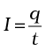 (3.1)
is defined to be the current across the area in the forward direction. (If it turn out to be a negative number, it implies a current in the backward direction.)
Currents are not always steady and hence more generally, we define the current as follows. Let ∆Q be the net charge flowing across a cross-section of a conductor during the time interval ∆t [i.e., between times t and (t + ∆t)]. Then, the current at time t across the cross-section of the conductor is defined as the value of the ratio of ∆Q to ∆t in the limit of ∆t tending to zero,
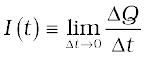 (3.2)
In SI units, the unit of current is ampere. An ampere is defined through magnetic effects of currents that we will study in the following chapter. An ampere is typically the order of magnitude of currents in domestic appliances. An average lightning carries currents of the order of tens of thousands of amperes and at the other extreme, currents in our nerves are in microamperes.
3.3 Electric Currents in Conductors
An electric charge will experience a force if an electric field is applied. If it is free to move, it will thus move contributing to a current. In nature, free charged particles do exist like in upper strata of atmosphere called the ionosphere. However, in atoms and molecules, the negatively charged electrons and the positively charged nuclei are bound to each other and are thus not free to move. Bulk matter is made up of many molecules, a gram of water, for example, contains approximately 1022 molecules. These molecules are so closely packed that the electrons are no longer attached to individual nuclei. In some materials, the electrons will still be bound, i.e., they will not accelerate even if an electric field is applied. In other materials, notably metals, some of the electrons are practically free to move within the bulk material. These materials, generally called conductors, develop electric currents in them when an electric field is applied.
If we consider solid conductors, then of course the atoms are tightly bound to each other so that the current is carried by the negatively charged electrons. There are, however, other types of conductors like electrolytic solutions where positive and negative charges both can move. In our discussions, we will focus only on solid conductors so that the current is carried by the negatively charged electrons in the background of fixed positive ions.
Consider first the case when no electric field is present. The electrons will be moving due to thermal motion during which they collide with the fixed ions. An electron colliding with an ion emerges with the same speed as before the collision. However, the direction of its velocity after the collision is completely random. At a given time, there is no preferential direction for the velocities of the electrons. Thus on the average, the number of electrons travelling in any direction will be equal to the number of electrons travelling in the opposite direction. So, there will be no net electric current.

Figure 3.1 Charges +Q and –Q put at the ends of a metallic cylinder. The electrons will drift because of the electric field created to neutralise the charges. The current thus will stop after a while unless the charges +Q and –Q are continuously replenished.
Let us now see what happens to such a piece of conductor if an electric field is applied. To focus our thoughts, imagine the conductor in the shape of a cylinder of radius R (Fig. 3.1). Suppose we now take two thin circular discs of a dielectric of the same radius and put positive charge +Q distributed over one disc and similarly –Q at the other disc. We attach the two discs on the two flat surfaces of the cylinder. An electric field will be created and is directed from the positive towards the negative charge. The electrons will be accelerated due to this field towards +Q. They will thus move to neutralise the charges. The electrons, as long as they are moving, will constitute an electric current. Hence in the situation considered, there will be a current for a very short while and no current thereafter.
We can also imagine a mechanism where the ends of the cylinder are supplied with fresh charges to make up for any charges neutralised by electrons moving inside the conductor. In that case, there will be a steady electric field in the body of the conductor. This will result in a continuous current rather than a current for a short period of time. Mechanisms, which maintain a steady electric field are cells or batteries that we shall study later in this chapter. In the next sections, we shall study the steady current that results from a steady electric field in conductors.
3.4 Ohm’s Law
A basic law regarding flow of currents was discovered by G.S. Ohm in 1828, long before the physical mechanism responsible for flow of currents was discovered. Imagine a conductor through which a current I is flowing and let V be the potential difference between the ends of the conductor. Then Ohm’s law states that
V ∝ I
or, V = R I (3.3)
where the constant of proportionality R is called the resistance of the conductor. The SI units of resistance is ohm, and is denoted by the symbol Ω. The resistance R not only depends on the material of the conductor but also on the dimensions of the conductor. The dependence of R on the dimensions of the conductor can easily be determined as follows.

Figure 3.2 Illustrating the relation R = ρl/A for a rectangular slab of length l and area of cross-section A.
Consider a conductor satisfying Eq. (3.3) to be in the form of a slab of length l and cross sectional area A [Fig. 3.2(a)]. Imagine placing two such identical slabs side by side [Fig. 3.2(b)], so that the length of the combination is 2l. The current flowing through the combination is the same as that flowing through either of the slabs. If V is the potential difference across the ends of the first slab, then V is also the potential difference across the ends of the second slab since the second slab is identical to the first and the same current I flows through both. The potential difference across the ends of the combination is clearly sum of the potential difference across the two individual slabs and hence equals 2V. The current through the combination is I and the resistance of the combination RC is [from Eq. (3.3)],
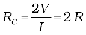 (3.4)
since V/I = R, the resistance of either of the slabs. Thus, doubling the length of a conductor doubles the resistance. In general, then resistance is proportional to length,
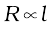 (3.5)
Next, imagine dividing the slab into two by cutting it lengthwise so that the slab can be considered as a combination of two identical slabs of length l, but each having a cross sectional area of A/2 [Fig. 3.2(c)].
Georg Simon Ohm (1787–1854)
Georg Simon Ohm (1787–1854) German physicist, professor at Munich. Ohm was led to his law by an analogy between the conduction of heat: the electric field is analogous to the temperature gradient, and the electric current is analogous to the heat flow.
For a given voltage V across the slab, if I is the current through the entire slab, then clearly the current flowing through each of the two half-slabs is I/2. Since the potential difference across the ends of the half-slabs is V, i.e., the same as across the full slab, the resistance of each of the half-slabs R1 is
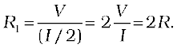 (3.6)
Thus, halving the area of the cross-section of a conductor doubles the resistance. In general, then the resistance R is inversely proportional to the cross-sectional area,
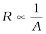 (3.7)
Combining Eqs. (3.5) and (3.7), we have
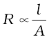 (3.8)
and hence for a given conductor
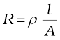 (3.9)
where the constant of proportionality ρ depends on the material of the conductor but not on its dimensions. ρ is called resistivity.
Using the last equation, Ohm’s law reads
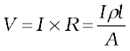 (3.10)
Current per unit area (taken normal to the current), I/A, is called current density and is denoted by j. The SI units of the current density are A/m2. Further, if E is the magnitude of uniform electric field in the conductor whose length is l, then the potential difference V across its ends is El. Using these, the last equation reads
E l = j ρ l
or, E = j ρ (3.11)
The above relation for magnitudes E and j can indeed be cast in a vector form. The current density, (which we have defined as the current through unit area normal to the current) is also directed along E, and is also a vector j (≡ j E/E). Thus, the last equation can be written as,
E = jρ (3.12)
or, j = σ E (3.13)
where σ ≡1/ρ is called the conductivity. Ohm’s law is often stated in an equivalent form, Eq. (3.13) in addition to Eq.(3.3). In the next section, we will try to understand the origin of the Ohm’s law as arising from the characteristics of the drift of electrons.
3.5 Drift of Electrons and the Origin of Resistivity
As remarked before, an electron will suffer collisions with the heavy fixed ions, but after collision, it will emerge with the same speed but in random directions. If we consider all the electrons, their average velocity will be zero since their directions are random. Thus, if there are N electrons and the velocity of the ith electron (i = 1, 2, 3, ... N ) at a given time is vi, then
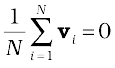 (3.14)
Consider now the situation when an electric field is present. Electrons will be accelerated due to this field by
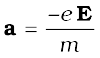 (3.15)
where –e is the charge and m is the mass of an electron. Consider again the ith electron at a given time t. This electron would have had its last collision some time before t, and let ti be the time elapsed after its last collision. If vi was its velocity immediately after the last collision, then its velocity Vi at time t is
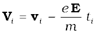 (3.16)

Figure 3.3 A schematic picture of an electron moving from a point A to another point B through repeated collisions, and straight line travel between collisions (full lines). If an electric field is applied as shown, the electron ends up at point B′(dotted lines). A slight drift in a direction opposite the electric field is visible.
since starting with its last collision it was accelerated (Fig. 3.3) with an acceleration given by Eq. (3.15) for a time interval ti. The average velocity of the electrons at time t is the average of all the Vi’s. The average of vi’s is zero [Eq. (3.14)] since immediately after any collision, the direction of the velocity of an electron is completely random.The collisions of the electrons do not occur at regular intervals but at random times. Let us denote by τ, the average time between successive collisions. Then at a given time, some of the electrons would have spent time more than τ and some less than τ. In other words, the time ti in Eq. (3.16) will be less than τ for some and more than τ for others as we go through the values of i = 1, 2 ..... N. The average value of ti then is τ (known as relaxation time). Thus, averaging Eq. (3.16) over the N-electrons at any given time t gives us for the average velocity vd
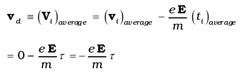(3.17)
This last result is surprising. It tells us that the electrons move with an average velocity which is independent of time, although electrons are accelerated. This is the phenomenon of drift and the velocity vd in Eq. (3.17) is called the drift velocity.

Because of the drift, there will be net transport of charges across any area perpendicular to E. Consider a planar area A, located inside the conductor such that the normal to the area is parallel to E
(Fig. 3.4). Then because of the drift, in an infinitesimal amount of time ∆t, all electrons to the left of the area at distances upto |vd|∆t would have crossed the area. If n is the number of free electrons per unit volume in the metal, then there are n ∆t |vd|A such electrons. Since each electron carries a charge –e, the total charge transported across this area A to the right in time ∆t is –ne A|vd|∆t. E is directed towards the left and hence the total charge transported along E across the area is negative of this. The amount of charge crossing the area A in time ∆t is by definition [Eq. (3.2)] I ∆t, where I is the magnitude of the current. Hence,
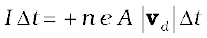 (3.18)
Substituting the value of |vd| from Eq. (3.17)
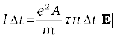 (3.19)
By definition I is related to the magnitude |j| of the current density by
I = |j|A (3.20)
Hence, from Eqs.(3.19) and (3.20),
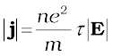 (3.21)
The vector j is parallel to E and hence we can write Eq. (3.21) in the vector form
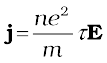 (3.22)
Comparison with Eq. (3.13) shows that Eq. (3.22) is exactly the Ohm’s law, if we identify the conductivity σ as
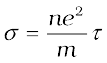 (3.23)
We thus see that a very simple picture of electrical conduction reproduces Ohm’s law. We have, of course, made assumptions that τ and n are constants, independent of E. We shall, in the next section, discuss the limitations of Ohm’s law.
Example 3.1 (a) Estimate the average drift speed of conduction electrons in a copper wire of cross-sectional area 1.0 × 10–7 m2 carrying a current of 1.5 A. Assume that each copper atom contributes roughly one conduction electron. The density of copper is 9.0 × 103 kg/m3, and its atomic mass is 63.5 u. (b) Compare the drift speed obtained above with, (i) thermal speeds of copper atoms at ordinary temperatures, (ii) speed of propagation of electric field along the conductor which causes the drift motion.
Solution
(a) The direction of drift velocity of conduction electrons is opposite to the electric field direction, i.e., electrons drift in the direction of increasing potential. The drift speed vd is given by Eq. (3.18)
vd = (I/neA)
Now, e = 1.6 × 10–19 C, A = 1.0 × 10–7m2, I = 1.5 A. The density of conduction electrons, n is equal to the number of atoms per cubic metre (assuming one conduction electron per Cu atom as is reasonable from its valence electron count of one). A cubic metre of copper has a mass of 9.0 × 103 kg. Since 6.0 × 1023 copper atoms have a mass of 63.5 g,
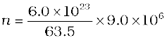
= 8.5 × 1028 m–3
which gives,
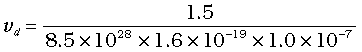
= 1.1 × 10–3 m s–1 = 1.1 mm s–1
(b) (i) At a temperature T, the thermal speed* of a copper atom of mass M is obtained from [<(1/2) Mv2 > = (3/2) kBT ] and is thus typically of the order of 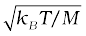, where kB is the Boltzmann constant. For copper at 300 K, this is about 2 × 102 m/s. This figure indicates the random vibrational speeds of copper atoms in a conductor. Note that the drift speed of electrons is much smaller, about 10–5 times the typical thermal speed at ordinary temperatures.
(ii) An electric field travelling along the conductor has a speed of an electromagnetic wave, namely equal to 3.0 × 108 m s–1
(You will learn about this in Chapter 8). The drift speed is, in comparison, extremely small; smaller by a factor of 10–11.
* See Eq. (13.23) of Chapter 13 from Class XI book.
Example 3.2
(a) In Example 3.1, the electron drift speed is estimated to be only a few mm s–1 for currents in the range of a few amperes? How then is current established almost the instant a circuit is closed?
(b) The electron drift arises due to the force experienced by electrons in the electric field inside the conductor. But force should cause acceleration. Why then do the electrons acquire a steady average drift speed?
(c) If the electron drift speed is so small, and the electron’s charge is small, how can we still obtain large amounts of current in a conductor?
(d) When electrons drift in a metal from lower to higher potential, does it mean that all the ‘free’ electrons of the metal are moving in the same direction?
(e) Are the paths of electrons straight lines between successive collisions (with the positive ions of the metal) in the (i) absence of electric field, (ii) presence of electric field?
Solution
(a) Electric field is established throughout the circuit, almost instantly (with the speed of light) causing at every point a local electron drift. Establishment of a current does not have to wait for electrons from one end of the conductor travelling to the other end. However, it does take a little while for the current to reach its steady value.
(b) Each ‘free’ electron does accelerate, increasing its drift speed until it collides with a positive ion of the metal. It loses its drift speed after collision but starts to accelerate and increases its drift speed again only to suffer a collision again and so on. On the average, therefore, electrons acquire only a drift speed.
(c) Simple, because the electron number density is enormous,
~1029 m–3.
(d) By no means. The drift velocity is superposed over the large random velocities of electrons.
(e) In the absence of electric field, the paths are straight lines; in the presence of electric field, the paths are, in general, curved.
3.5.1 Mobility
As we have seen, conductivity arises from mobile charge carriers. In metals, these mobile charge carriers are electrons; in an ionised gas, they are electrons and positive charged ions; in an electrolyte, these can be both positive and negative ions.
An important quantity is the mobility µ defined as the magnitude of the drift velocity per unit electric field:
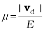 (3.24)
The SI unit of mobility is m2/Vs and is 104 of the mobility in practical units (cm2/Vs). Mobility is positive. From Eq. (3.17), we have
vd = 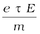
Hence,
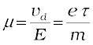 (3.25)
where τ is the average collision time for electrons.
3.6 Limitations of Ohm’s Law
Although Ohm’s law has been found valid over a large class of materials, there do exist materials and devices used in electric circuits where the proportionality of V and I does not hold. The deviations broadly are one or more of the following types:

Figure 3.5 The dashed line represents the linear Ohm’s law. The solid line is the voltage V versus current I for a good conductor.
(a) V ceases to be proportional to I (Fig. 3.5).
(b) The relation between V and I depends on the sign of V. In other words, if I is the current for a certain V, then reversing the direction of V keeping its magnitude fixed, does not produce a current of the same magnitude as I in the opposite direction (Fig. 3.6). This happens, for example, in a diode which we will study in Chapter 14.
Figure 3.6 Characteristic curve of a diode. Note the different scales for negative and positive values of the voltage and current.

Figure 3.7 Variation of current versus voltage for GaAs.
(c) The relation between V and I is not unique, i.e., there is more than one value of V for the same current I (Fig. 3.7). A material exhibiting such behaviour is GaAs.
Materials and devices not obeying Ohm’s law in the form of Eq. (3.3) are actually widely used in electronic circuits. In this and a few subsequent chapters, however, we will study the electrical currents in materials that obey Ohm’s law.
3.7 Resistivity of Various Materials
The resistivities of various common materials are listed in Table 3.1. The materials are classified as conductors, semiconductors and insulators depending on their resistivities, in an increasing order of their values. Metals have low resistivities in the range of 10–8 Ωm to 10–6 Ωm. At the other end are insulators like ceramic, rubber and plastics having resistivities 1018 times greater than metals or more. In between the two are the semiconductors. These, however, have resistivities characteristically decreasing with a rise in temperature. The resistivities of semiconductors are also affected by presence of small amount of impurities. This last feature is exploited in use of semiconductors for electronic devices.
Commercially produced resistors for domestic use or in laboratories are of two major types: wire bound resistors and carbon resistors. Wire bound resistors are made by winding the wires of an alloy, viz., manganin, constantan, nichrome or similar ones. The choice of these materials is dictated mostly by the fact that their resistivities are relatively insensitive to temperature. These resistances are typically in the range of a fraction of an ohm to a few hundred ohms.
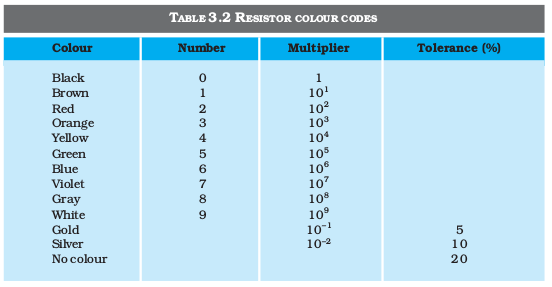
Resistors in the higher range are made mostly from carbon. Carbon resistors are compact, inexpensive and thus find extensive use in electronic circuits. Carbon resistors are small in size and hence their values are given using a colour code.

Figure 3.8 Colour coded resistors (a) (22 × 102 Ω) ± 10%, (b) (47 × 10 Ω) ± 5%.
The resistors have a set of co-axial coloured rings on them whose significance are listed in Table 3.2. The first two bands from the end indicate the first two significant figures of the resistance in ohms.The third band indicates the decimal multiplier (as listed in Table 3.2). The last band stands for tolerance or possible variation in percentage about the indicated values. Sometimes, this last band is absent and that indicates a tolerance of 20% (Fig. 3.8). For example, if the four colours are orange, blue, yellow and gold, the resistance value is 36 × 104 Ω, with a tolerence value of 5%.
3.8 Temperature Dependence of Resistivity
The resistivity of a material is found to be dependent on the temperature. Different materials do not exhibit the same dependence on temperatures. Over a limited range of temperatures, that is not too large, the resistivity of a metallic conductor is approximately given by,
ρT = ρ0 [1 + α (T–T0)] (3.26)
where ρT is the resistivity at a temperature T and ρ0 is the same at a reference temperature T0. α is called the temperature co-efficient of resistivity, and from Eq. (3.26), the dimension of α is (Temperature)–1. For metals, α is positive and values of α for some metals at T0 = 0°C are listed in Table 3.1.
The relation of Eq. (3.26) implies that a graph of ρT plotted against T would be a straight line. At temperatures much lower than 0°C, the graph, however, deviates considerably from a straight line (Fig. 3.9).
Equation (3.26) thus, can be used approximately over a limited range of T around any reference temperature T0, where the graph can be approximated as a straight line.
Figure 3.9 Resistivity ρT of copper as a function of temperature T.
Figure 3.10 Resistivity ρT of nichrome as a function of absolute temperature T.
Some materials like Nichrome (which is an alloy of nickel, iron and chromium) exhibit a very weak dependence of resistivity with temperature (Fig. 3.10). Manganin and constantan have similar properties. These materials are thus widely used in wire bound standard resistors since their resistance values would change very little with temperatures.
Unlike metals, the resistivities of semiconductors decrease with increasing temperatures. A typical dependence is shown in Fig. 3.11.
We can qualitatively understand the temperature dependence of resistivity, in the light of our derivation of Eq. (3.23). From this equation, resistivity of a material is given by
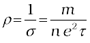 (3.27)
ρ thus depends inversely both on the number n of free electrons per unit volume and on the average time τ between collisions. As we increase temperature, average speed of the electrons, which act as the carriers of current, increases resulting in more frequent collisions. The average time of collisions τ, thus decreases with temperature.
In a metal, n is not dependent on temperature to any appreciable extent and thus the decrease in the value of τ with rise in temperature causes ρ to increase as we have observed.
For insulators and semiconductors, however, n increases with temperature. This increase more than compensates any decrease in τ in Eq.(3.23) so that for such materials, ρ decreases with temperature.
Example 3.3 An electric toaster uses nichrome for its heating element. When a negligibly small current passes through it, its resistance at room temperature (27.0 °C) is found to be 75.3 Ω. When the toaster is connected to a 230 V supply, the current settles, after a few seconds, to a steady value of 2.68 A. What is the steady temperature of the nichrome element? The temperature coefficient of resistance of nichrome averaged over the temperature range involved, is 1.70 × 10–4 °C–1.
Solution When the current through the element is very small, heating effects can be ignored and the temperature T1 of the element is the same as room temperature. When the toaster is connected to the supply, its initial current will be slightly higher than its steady value of 2.68 A. But due to heating effect of the current, the temperature will rise. This will cause an increase in resistance and a slight decrease in current. In a few seconds, a steady state will be reached when temperature will rise no further, and both the resistance of the element and the current drawn will achieve steady values. The resistance R2 at the steady temperature T2 is
R2 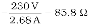
Using the relation
R2 = R1 [1 + α (T2 – T1)]
with α = 1.70 × 10–4 °C–1, we get
T2 – T1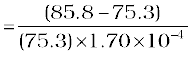 = 820 °C
that is, T2 = (820 + 27.0) °C = 847 °C
Thus, the steady temperature of the heating element (when heating effect due to the current equals heat loss to the surroundings) is 847 °C.
Example 3.4 The resistance of the platinum wire of a platinum resistance thermometer at the ice point is 5 Ω and at steam point is 5.39 Ω. When the thermometer is inserted in a hot bath, the resistance of the platinum wire is 5.795 Ω. Calculate the temperature of the bath.
Solution R0 = 5 Ω, R100 = 5.23 Ω and Rt = 5.795 Ω
Now, 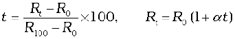
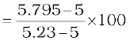
=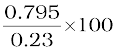 = 345.65 °C
3.9 Electrical Energy, Power
Consider a conductor with end points A and B, in which a current I is flowing from A to B. The electric potential at A and B are denoted by V(A) and V(B) respectively. Since current is flowing from A to B, V(A) > V(B) and the potential difference across AB is V = V(A) – V(B) > 0.
In a time interval ∆t, an amount of charge ∆Q = I ∆t travels from A to B. The potential energy of the charge at A, by definition, was Q V(A) and similarly at B, it is Q V(B). Thus, change in its potential energy ∆Upot is
∆Upot = Final potential energy – Initial potential energy
= ∆Q[(V (B) – V (A)] = –∆Q V
= –I V∆t < 0 (3.28)
If charges moved without collisions through the conductor, their kinetic energy would also change so that the total energy is unchanged. Conservation of total energy would then imply that,
∆K = –∆Upot (3.29)
that is,
∆K = I V∆t > 0 (3.30)
Thus, in case charges were moving freely through the conductor under the action of electric field, their kinetic energy would increase as they move. We have, however, seen earlier that on the average, charge carriers do not move with acceleration but with a steady drift velocity. This is because of the collisions with ions and atoms during transit. During collisions, the energy gained by the charges thus is shared with the atoms. The atoms vibrate more vigorously, i.e., the conductor heats up. Thus, in an actual conductor, an amount of energy dissipated as heat in the conductor during the time interval ∆t is,
∆W = I V∆t (3.31)
The energy dissipated per unit time is the power dissipated
P = ∆W/∆t and we have,
P = I V (3.32)
Using Ohm’s law V = IR, we get
P = I 2 R = V 2/R (3.33)
as the power loss (“ohmic loss”) in a conductor of resistance R carrying a current I. It is this power which heats up, for example, the coil of an electric bulb to incandescence, radiating out heat and light.
Where does the power come from? As we have reasoned before, we need an external source to keep a steady current through the conductor. It is clearly this source which must supply this power. In the simple circuit shown with a cell (Fig.3.12), it is the chemical energy of the cell which supplies this power for as long as it can.
The expressions for power, Eqs. (3.32) and (3.33), show the dependence of the power dissipated in a resistor R on the current through it and the voltage across it.
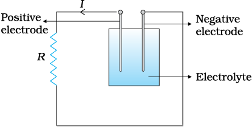
Figure 3.12 Heat is produced in the resistor R which is connected across the terminals of a cell. The energy dissipated in the resistor R comes from the chemical energy of the electrolyte.
Equation (3.33) has an important application to power transmission. Electrical power is transmitted from power stations to homes and factories, which may be hundreds of miles away, via transmission cables. One obviously wants to minimise the power loss in the transmission cables connecting the power stations to homes and factories. We shall see now how this can be achieved. Consider a device R, to which a power P is to be delivered via transmission cables having a resistance Rc to be dissipated by it finally. If V is the voltage across R and I the current through it, then
P = V I (3.34)
The connecting wires from the power station to the device has a finite resistance Rc. The power dissipated in the connecting wires, which is wasted is Pc with
Pc = I2 Rc
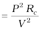 (3.35)
from Eq. (3.32). Thus, to drive a device of power P, the power wasted in the connecting wires is inversely proportional to V2. The transmission cables from power stations are hundreds of miles long and their resistance Rc is considerable. To reduce Pc, these wires carry current at enormous values of V and this is the reason for the high voltage danger signs on transmission lines — a common sight as we move away from populated areas. Using electricity at such voltages is not safe and hence at the other end, a device called a transformer lowers the voltage to a value suitable for use.
3.10 Combination of Resistors – Series and Parallel
The current through a single resistor R across which there is a potential difference V is given by Ohm’s law I = V/R. Resistors are sometimes joined together and there are simple rules for calculation of equivalent resistance of such combination.
Figure 3.13 A series combination of two resistor R1 and R2.
Two resistors are said to be in series if only one of their end points is joined (Fig. 3.13). If a third resistor is joined with the series combination of the two (Fig. 3.14), then all three are said to be in series. Clearly, we can extend this definition to series combination of any number of resistors.
Figure 3.14 A series combination of three resistors R1, R2, R3.
Two or more resistors are said to be in parallel if one end of all the resistors is joined together and similarly the other ends joined together (Fig. 3.15).

Figure 3.15 Two resistors R1 and R2 connected in parallel.
Consider two resistors R1 and R2 in series. The charge which leaves R1 must be entering R2. Since current measures the rate of flow of charge, this means that the same current I flows through R1 and R2. By Ohm’s law:
Potential difference across R1 = V1 = I R1, and
Potential difference across R2 = V2 = I R2.
The potential difference V across the combination is V1+V2. Hence,
V = V1+ V2 = I (R1 + R2) (3.36)
This is as if the combination had an equivalent resistance Req, which by Ohm’s law is
Req 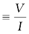 = (R1 + R2) (3.37)
If we had three resistors connected in series, then similarly
V = I R1 + I R2 + I R3 = I (R1+ R2+ R3). (3.38)
This obviously can be extended to a series combination of any number n of resistors R1, R2 ....., Rn. The equivalent resistance Req is
Req = R1 + R2 + . . . + Rn (3.39)
Consider now the parallel combination of two resistors (Fig. 3.15). The charge that flows in at A from the left flows out partly through R1 and partly through R2. The currents I, I1, I2 shown in the figure are the rates of flow of charge at the points indicated. Hence,
I = I1 + I2 (3.40)
The potential difference between A and B is given by the Ohm’s law applied to R1
V = I1 R1 (3.41)
Also, Ohm’s law applied to R2 gives
V = I2 R2 (3.42)
∴ I = I1 + I2 = 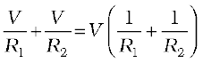 (3.43)
If the combination was replaced by an equivalent resistance Req, we would have, by Ohm’s law
 (3.44)
(3.44)
Hence,
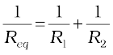 (3.45)
We can easily see how this extends to three resistors in parallel
(Fig. 3.16).

Figure 3.16 Parallel combination of three resistors R1, R2 and R3.
Exactly as before
I = I1 + I2 + I3 (3.46)
and applying Ohm’s law to R1, R2 and R3 we get,
V = I1 R1, V = I2 R2, V = I3 R3 (3.47)
So that
I = I1 + I2 + I3 =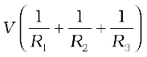 (3.48)
An equivalent resistance Req that replaces the combination, would be such that
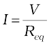 (3.49)
and hence
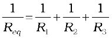 (3.50)
We can reason similarly for any number of resistors in parallel. The equivalent resistance of n resistors R1, R2 . . . ,Rn is
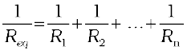 (3.51)
These formulae for equivalent resistances can be used to find out currents and voltages in more complicated circuits. Consider for example, the circuit in Fig. (3.17), where there are three resistors R1, R2 and R3.

Figure 3.17 A combination of three resistors R1, R2 and R3. R2, R3 are in parallel with an equivalent resistance . R1 and are in series with an equivalent resistance 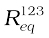.
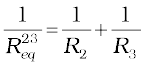
or, 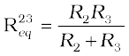 (3.52)/
The circuit now has R1 and in series and hence their combination can be replaced by an equivalent resistance with
(3.53)
If the voltage between A and C is V, the current I is given by
(3.54)
3.11 Cells, emf, Internal Resistance
We have already mentioned that a simple device to maintain a steady current in an electric circuit is the electrolytic cell. Basically a cell has two electrodes, called the positive (P) and the negative (N), as shown in Fig. 3.18. They are immersed in an electrolytic solution. Dipped in the solution, the electrodes exchange charges with the electrolyte. The positive electrode has a potential difference V+ (V+ > 0) between itself and the electrolyte solution immediately adjacent to it marked A in the figure. Similarly, the negative electrode develops a negative potential – (V– ) (V– 0) relative to the electrolyte adjacent to it, marked as B in the figure. When there is no current, the electrolyte has the same potential throughout, so that the potential difference between P and N is V+ – (–V–) = V+ + V– . This difference is called the electromotive force (emf) of the cell and is denoted by ε. Thus
ε = V++V– > 0 (3.55)
Note that ε is, actually, a potential difference and not a force. The name emf, however, is used because of historical reasons, and was given at a time when the phenomenon was not understood properly.

Figure 3.18 (a) Sketch of an electrolyte cell with positive terminal P and negative terminal N. The gap between the electrodes is exaggerated for clarity. A and B are points in the electrolyte typically close to P and N. (b) the symbol for a cell, + referring to P and – referring to the N electrode. Electrical connections to the cell are made at P and N.
To understand the significance of ε, consider a resistor R connected across the cell (Fig. 3.18). A current I flows across R from C to D. As explained before, a steady current is maintained because current flows from N to P through the electrolyte. Clearly, across the electrolyte the same current flows through the electrolyte but from N to P, whereas through R, it flows from P to N.
The electrolyte through which a current flows has a finite resistance r, called the internal resistance. Consider first the situation when R is infinite so that I = V/R = 0, where V is the potential difference between P and N. Now,
V = Potential difference between P and A
+ Potential difference between A and B
+ Potential difference between B and N
= ε (3.56)
Thus, emf ε is the potential difference between the positive and negative electrodes in an open circuit, i.e., when no current is flowing through the cell.
If however R is finite, I is not zero. In that case the potential difference between P and N is
V = V++ V– – I r
= ε – I r (3.57)
Note the negative sign in the expression (I r) for the potential difference between A and B. This is because the current I flows from B to A in the electrolyte.
In practical calculations, internal resistances of cells in the circuit may be neglected when the current I is such that ε >> I r. The actual values of the internal resistances of cells vary from cell to cell. The internal resistance of dry cells, however, is much higher than the common electrolytic cells.
We also observe that since V is the potential difference across R, we have from Ohm’s law
V = I R (3.58)
Combining Eqs. (3.57) and (3.58), we get
I R = ε – I r
Or, (3.59)
The maximum current that can be drawn from a cell is for R = 0 and it is Imax = ε/r. However, in most cells the maximum allowed current is much lower than this to prevent permanent damage to the cell.
CHARGES IN CLOUDS
In olden days lightning was considered as an atmospheric flash of supernatural origin. It was believed to be the great weapon of Gods. But today the phenomenon of lightning can be explained scientifically by elementary principles of physics.
Atmospheric electricity arises due to the separation of electric charges. In the ionosphere and magnetosphere strong electric current is generated from the solar-terrestrial interaction. In the lower atmosphere the current is weaker and is maintained by thunderstorm.
There are ice particles in the clouds, which grow, collide, fracture and break apart. The smaller particles acquire positive charge and the larger ones negative charge. These charged particles get separated by updrifts in the clouds and gravity. The upper portion of the cloud becomes positively charged and the middle negatively charged, leading to dipole structure. Sometimes a very weak positive charge is found near the base of the cloud. The ground is positively charged at the time of thunderstorm development. Also cosmic and radioactive radiations ionise air into positive and negative ions and air becomes (weakly) electrically conductive. The separation of charges produce tremendous amount of electrical potential within the cloud as well as between the cloud and ground. This can amount to millions of volts and eventually the electrical resistance in the air breaks down and lightning flash begins and thousands of amperes of current flows. The electric field is of the order of 105 V/m. A lightning flash is composed of a series of strokes with an average of about four and the duration of each flash is about 30 seconds. The average peak power per stroke is about 1012 watts.
During fair weather also there is charge in the atmosphere. The fair weather electric field arises due to the existence of a surface charge density at ground and an atmospheric conductivity as well as due to the flow of current from the ionosphere to the earth’s surface, which is of the order of picoampere / square metre. The surface charge density at ground is negative; the electric field is directed downward. Over land the average electric field is about 120 V/m, which corresponds to a surface charge density of
–1.2 × 10–9 C/m2. Over the entire earth’s surface, the total negative charge amount to about 600 kC. An equal positive charge exists in the atmosphere. This electric field is not noticeable in daily life. The reason why it is not noticed is that virtually everything, including our bodies, is conductor compared to air.
Example 3.5 A network of resistors is connected to a 16 V battery with internal resistance of 1Ω, as shown in Fig. 3.19: (a) Compute the equivalent resistance of the network. (b) Obtain the current in each resistor. (c) Obtain the voltage drops VAB,VBC and VCD.

Figure 3.19
Solution
(a) The network is a simple series and parallel combination of resistors. First the two 4Ω resistors in parallel are equivalent to a resistor = [(4 × 4)/(4 + 4)] Ω = 2 Ω.
In the same way, the 12 Ω and 6 Ω resistors in parallel are equivalent to a resistor of
[(12 × 6)/(12 + 6)] Ω = 4 Ω.
The equivalent resistance R of the network is obtained by combining these resistors (2 Ω and 4 Ω) with 1 Ω in series,
that is,
R = 2 Ω + 4 Ω + 1 Ω = 7 Ω.
(b) The total current I in the circuit is
Consider the resistors between A and B. If I1 is the current in one of the 4 Ω resistors and I2 the current in the other,
I1 × 4 = I2 × 4
that is, I1 = I2, which is otherwise obvious from the symmetry of the two arms. But I1 + I2 = I = 2 A. Thus,
I1 = I2 = 1 A
that is, current in each 4 Ω resistor is 1 A. Current in 1 Ω resistor between B and C would be 2 A.
Now, consider the resistances between C and D. If I3 is the current in the 12 Ω resistor, and I4 in the 6 Ω resistor,
I3 × 12 = I4 × 6, i.e., I4 = 2I3
But, I3 + I4 = I = 2 A
Thus, I3 = A, I4 = A
A, I4 = A
that is, the current in the 12 Ω resistor is (2/3) A, while the current in the 6 Ω resistor is (4/3) A.
(c) The voltage drop across AB is
VAB = I1 × 4 = 1 A × 4 Ω = 4 V,
This can also be obtained by multiplying the total current between A and B by the equivalent resistance between A and B, that is,
VAB = 2 A × 2 Ω = 4 V
The voltage drop across BC is
VBC = 2 A × 1 Ω = 2 V
Finally, the voltage drop across CD is
VCD = 12 Ω × I3 = 12 Ω × A = 8 V.
This can alternately be obtained by multiplying total current between C and D by the equivalent resistance between C and D,
that is,
VCD = 2 A × 4 Ω = 8 V
Note that the total voltage drop across AD is 4 V + 2 V + 8 V = 14 V. Thus, the terminal voltage of the battery is 14 V, while its emf is 16 V. The loss of the voltage (= 2 V) is accounted for by the internal resistance 1 Ω of the battery [2 A × 1 Ω = 2 V].
3.12 Cells in Series and in Parallel
Like resistors, cells can be combined together in an electric circuit. And like resistors, one can, for calculating currents and voltages in a circuit, replace a combination of cells by an equivalent cell.

Figure 3.20 Two cells of emf’s ε1 and ε2 in the series. r1, r2 are their internal resistances. For connections across A and C, the combination can be considered as one cell of emf εeq and an internal resistance req.
Consider first two cells in series (Fig. 3.20), where one terminal of the two cells is joined together leaving the other terminal in either cell free.
ε1, ε2 are the emf’s of the two cells and r1, r2 their internal resistances, respectively.
Let V (A), V (B), V (C) be the potentials at points A, B and C shown in Fig. 3.20. Then V (A) – V (B) is the potential difference between the positive and negative terminals of the first cell. We have already calculated it in Eq. (3.57) and hence,
(3.60)
Similarly,
 (3.61)
(3.61)
Hence, the potential difference between the terminals A and C of the combination is
(3.62)
If we wish to replace the combination by a single cell between A and C of emf εeq and internal resistance req, we would have
VAC = εeq– I req (3.63)
Comparing the last two equations, we get
εeq = ε1 + ε2 (3.64)
and req = r1 + r2 (3.65)
In Fig.3.20, we had connected the negative electrode of the first to the positive electrode of the second. If instead we connect the two negatives, Eq. (3.61) would change to VBC = –ε2–Ir2 and we will get
εeq = ε1 – ε2 (ε1 > ε2) (3.66)
The rule for series combination clearly can be extended to any number of cells:
(i) The equivalent emf of a series combination of n cells is just the sum of their individual emf’s, and
(ii) The equivalent internal resistance of a series combination of n cells is just the sum of their internal resistances.

Figure 3.21 Two cells in parallel. For connections across A and C, the combination can be replaced by one cell of emf εeq and internal resistances req whose values are given in Eqs. (3.73) and (3.74).
This is so, when the current leaves each cell from the positive electrode. If in the combination, the current leaves any cell from the negative electrode, the emf of the cell enters the expression for εeq with a negative sign, as in Eq. (3.66).
Next, consider a parallel combination of the cells (Fig. 3.21). I1 and I2 are the currents leaving the positive electrodes of the cells. At the point B1, I1 and I2 flow in whereas the current I flows out. Since as much charge flows in as out, we have
I = I1 + I2 (3.67)
Let V (B1) and V (B2) be the potentials at B1 and B2, respectively. Then, considering the first cell, the potential difference across its terminals is V (B1) – V (B2). Hence, from Eq. (3.57)
(3.68)
Points B1 and B2 are connected exactly similarly to the second cell. Hence considering the second cell, we also have
(3.69)
Combining the last three equations
(3.70)
Hence, V is given by,
(3.71)
If we want to replace the combination by a single cell, between B1 and B2, of emf εeq and internal resistance req, we would have
V = εeq – I req (3.72)
The last two equations should be the same and hence
(3.73)
(3.74)
We can put these equations in a simpler way,
(3.75)
(3.76)
In Fig. (3.21), we had joined the positive terminals together and similarly the two negative ones, so that the currents I1, I2 flow out of positive terminals. If the negative terminal of the second is connected to positive terminal of the first, Eqs. (3.75) and (3.76) would still be valid with ε 2 → –ε2
Equations (3.75) and (3.76) can be extended easily. If there an n cells of emf ε1, . . . εn and of internal resistances r1, . . . rn respectively, connected in parallel, the combination is equivalent to a single cell of emf εeq and internal resistance req, such that
(3.77)
(3.78)
Gustav Robert Kirchhoff (1824 – 1887)
Gustav Robert Kirchhoff (1824 – 1887) German physicist, professor at Heidelberg and at
Berlin. Mainly known for his development of spectroscopy, he also made many important contributions to mathe- matical physics, among them, his first and second rules for circuits.
3.13 Kirchhoff’s Rules
Electric circuits generally consist of a number of resistors and cells interconnected sometimes in a complicated way. The formulae we have derived earlier for series and parallel combinations of resistors are not always sufficient to determine all the currents and potential differences in the circuit. Two rules, called Kirchhoff’s rules, are very useful for analysis of electric circuits.
V = ε + I r (3.79)
Having clarified labelling, we now state the rules and the proof:
(a) Junction rule: At any junction, the sum of the currents entering the junction is equal to the sum of currents leaving the junction (Fig. 3.22).
This applies equally well if instead of a junction of several lines, we consider a point in a line.
The proof of this rule follows from the fact that when currents are steady, there is no accumulation of charges at any junction or at any point in a line. Thus, the total current flowing in, (which is the rate at which charge flows into the junction), must equal the total current flowing out.
(b) Loop rule: The algebraic sum of changes in potential around any closed loop involving resistors and cells in the loop is zero (Fig. 3.22).

Figure 3.22 At junction a the current leaving is I1 + I2 and current entering is I3. The junction rule says I3 = I1 + I2. At point h current entering is I1. There is only one current leaving h and by junction rule that will also be I1. For the loops ‘ahdcba’ and ‘ahdefga’, the loop rules give –30I1 – 41 I3 + 45 = 0 and –30I1 + 21 I2 – 80 = 0.
This rule is also obvious, since electric potential is dependent on the location of the point. Thus starting with any point if we come back to the same point, the total change must be zero. In a closed loop, we do come back to the starting point and hence the rule.
Example 3.6 A battery of 10 V and negligible internal resistance is connected across the diagonally opposite corners of a cubical network consisting of 12 resistors each of resistance 1 Ω (Fig. 3.23). Determine the equivalent resistance of the network and the current along each edge of the cube.
Figure 3.23
Solution The network is not reducible to a simple series and parallel combinations of resistors. There is, however, a clear symmetry in the problem which we can exploit to obtain the equivalent resistance of the network.
The paths AA′, AD and AB are obviously symmetrically placed in the network. Thus, the current in each must be the same, say, I. Further, at the corners A′, B and D, the incoming current I must split equally into the two outgoing branches. In this manner, the current in all the 12 edges of the cube are easily written down in terms of I, using Kirchhoff’s first rule and the symmetry in the problem.
Next take a closed loop, say, ABCC′EA, and apply Kirchhoff’s second rule:
–IR – (1/2)IR – IR + ε = 0
where R is the resistance of each edge and ε the emf of battery. Thus,
ε =
The equivalent resistance Req of the network is
For R = 1 Ω, Req = (5/6) Ω and for ε = 10 V, the total current (= 3I) in the network is
3I = 10 V/(5/6) Ω = 12 A, i.e., I = 4 A
The current flowing in each edge can now be read off from the Fig. 3.23.
It should be noted that because of the symmetry of the network, the great power of Kirchhoff’s rules has not been very apparent in Example 3.6. In a general network, there will be no such simplification due to symmetry, and only by application of Kirchhoff’s rules to junctions and closed loops (as many as necessary to solve the unknowns in the network) can we handle the problem. This will be illustrated in Example 3.7.
Example 3.7 Determine the current in each branch of the network shown in Fig. 3.24.
Figure 3.24
Solution Each branch of the network is assigned an unknown current to be determined by the application of Kirchhoff’s rules. To reduce the number of unknowns at the outset, the first rule of Kirchhoff is used at every junction to assign the unknown current in each branch. We then have three unknowns I1, I2 and I3 which can be found by applying the second rule of Kirchhoff to three different closed loops. Kirchhoff’s second rule for the closed loop ADCA gives,
10 – 4(I1– I2) + 2(I2 + I3 – I1) – I1 = 0 [3.80(a)]
that is, 7I1– 6I2 – 2I3 = 10
For the closed loop ABCA, we get
10 – 4I2– 2 (I2 + I3) – I1 = 0
that is, I1 + 6I2 + 2I3 =10 [3.80(b)]
For the closed loop BCDEB, we get
5 – 2 (I2 + I3) – 2 (I2 + I3 – I1) = 0
that is, 2I1 – 4I2 – 4I3 = –5 [3.80(c)]
Equations (3.80 a, b, c) are three simultaneous equations in three unknowns. These can be solved by the usual method to give
I1 = 2.5A, I2 = A, I3 =  A
A
The currents in the various branches of the network are
AB :  A, CA : A, DEB : A
A, CA : A, DEB : A
AD :  A, CD : 0 A, BC :
A, CD : 0 A, BC :  A
A
It is easily verified that Kirchhoff’s second rule applied to the remaining closed loops does not provide any additional independent equation, that is, the above values of currents satisfy the second rule for every closed loop of the network. For example, the total voltage drop over the closed loop BADEB
equal to zero, as required by Kirchhoff’s second rule.

Similation for application of Kirchhoff’s rules:
http://www.phys.hawaii.edu/~teb/optics/java/kirch3/
3.14 Wheatstone Bridge
As an application of Kirchhoff’s rules consider the circuit shown in Fig. 3.25, which is called the Wheatstone bridge. The bridge has four resistors R1, R2, R3 and R4. Across one pair of diagonally opposite points (A and C in the figure) a source is connected. This (i.e., AC) is called the battery arm. Between the other two vertices, B and D, a galvanometer G (which is a device to detect currents) is connected. This line, shown as BD in the figure, is called the galvanometer arm.

Figure 3.25
For simplicity, we assume that the cell has no internal resistance. In general there will be currents flowing across all the resistors as well as a current Ig through G. Of special interest, is the case of a balanced bridge where the resistors are such that Ig= 0. We can easily get the balance condition, such that there is no current through G. In this case, the Kirchhoff’s junction rule applied to junctions D and B (see the figure) immediately gives us the relations I1 = I3 and I2 = I4. Next, we apply Kirchhoff’s loop rule to closed loops ADBA and CBDC. The first loop gives
–I1 R1 + 0 + I2 R2 = 0 (Ig = 0) (3.81)
and the second loop gives, upon using I3 = I1, I4 = I2
I2 R4 + 0 – I1 R3 = 0 (3.82)
From Eq. (3.81), we obtain,
whereas from Eq. (3.82), we obtain,
Hence, we obtain the condition
[3.83(a)]
This last equation relating the four resistors is called the balance condition for the galvanometer to give zero or null deflection.
The Wheatstone bridge and its balance condition provide a practical method for determination of an unknown resistance. Let us suppose we have an unknown resistance, which we insert in the fourth arm; R4 is thus not known. Keeping known resistances R1 and R2 in the first and second arm of the bridge, we go on varying R3till the galvanometer shows a null deflection. The bridge then is balanced, and from the balance condition the value of the unknown resistance R4 is given by,
[3.83(b)]
A practical device using this principle is called the meter bridge. It will be discussed in the next section.
Example 3.8 The four arms of a Wheatstone bridge (Fig. 3.26) have the following resistances:
AB = 100Ω, BC = 10Ω, CD = 5Ω, and DA = 60Ω.

Figure 3.26
A galvanometer of 15Ω resistance is connected across BD. Calculate the current through the galvanometer when a potential difference of 10 V is maintained across AC.
Solution Considering the mesh BADB, we have
100I1 + 15Ig – 60I2 = 0
or 20I1 + 3Ig – 12I2= 0 [3.84(a)]
Considering the mesh BCDB, we have
10 (I1 – Ig) – 15Ig – 5 (I2 + Ig) = 0
10I1 – 30Ig –5I2 = 0
2I1 – 6Ig – I2 = 0 [3.84(b)]
Considering the mesh ADCEA,
60I2 + 5 (I2 + Ig) = 10
65I2 + 5Ig = 10
13I2 + Ig = 2 [3.84(c)]
Multiplying Eq. (3.84b) by 10
20I1 – 60Ig – 10I2 = 0 [3.84(d)]
From Eqs. (3.84d) and (3.84a) we have
63Ig – 2I2 = 0
I2 = 31.5Ig [3.84(e)]
Substituting the value of I2 into Eq. [3.84(c)], we get
13 (31.5Ig ) + Ig = 2
410.5 Ig = 2
Ig = 4.87 mA.
3.15 Meter Bridge
The meter bridge is shown in Fig. 3.27. It consists of a wire of length 1m and of uniform cross sectional area stretched taut and clamped between two thick metallic strips bent at right angles, as shown. The metallic strip has two gaps across which resistors can be connected. The end points where the wire is clamped are connected to a cell through a key. One end of a galvanometer is connected to the metallic strip midway between the two gaps. The other end of the galvanometer is connected to a ‘jockey’. The jockey is essentially a metallic rod whose one end has a knife-edge which can slide over the wire to make electrical connection.

Figure 3.27 A meter bridge. Wire AC is 1 m long. R is a resistance to be measured and S is a standard resistance.
R is an unknown resistance whose value we want to determine. It is connected across one of the gaps. Across the other gap, we connect a standard known resistance S. The jockey is connected to some point D on the wire, a distance l cm from the end A. The jockey can be moved along the wire. The portion AD of the wire has a resistance Rcml, where Rcm is the resistance of the wire per unit centimetre. The portion DC of the wire similarly has a resistance Rcm (100-l).
The four arms AB, BC, DA and CD [with resistances R, S, Rcm l and Rcm(100-l)] obviously form a Wheatstone bridge with AC as the battery arm and BD the galvanometer arm. If the jockey is moved along the wire, then there will be one position where the galvanometer will show no current. Let the distance of the jockey from the end A at the balance point be l= l1. The four resistances of the bridge at the balance point then are R, S, Rcm l1 and Rcm(100–l1). The balance condition, Eq. [3.83(a)] gives
(3.85)
Thus, once we have found out l1, the unknown resistance R is known in terms of the standard known resistance S by
(3.86)
By choosing various values of S, we would get various values of l1, and calculate Reach time. An error in measurement of l1 would naturally result in an error in R. It can be shown that the percentage error in R can be minimised by adjusting the balance point near the middle of the bridge, i.e., when l1 is close to 50 cm. (This requires a suitable choice
of S.)
Example 3.9 In a metre bridge (Fig. 3.27), the null point is found at a distance of 33.7 cm from A. If now a resistance of 12Ω is connected in parallel with S, the null point occurs at 51.9 cm. Determine the values of R and S.
Solution From the first balance point, we get
(3.87)
After S is connected in parallel with a resistance of 12Ω , the resistance across the gap changes from S to Seq, where
and hence the new balance condition now gives
(3.88)
Substituting the value of R/S from Eq. (3.87), we get
which gives S = 13.5Ω. Using the value of R/S above, we get
R = 6.86 Ω.
3.16 Potentiometer
This is a versatile instrument. It is basically a long piece of uniform wire, sometimes a few meters in length across which a standard cell is connected. In actual design, the wire is sometimes cut in several pieces placed side by side and connected at the ends by thick metal strip.(Fig. 3.28). In the figure, the wires run from A to C. The small vertical portions are the thick metal strips connecting the various sections of
the wire.
A current I flows through the wire which can be varied by a variable resistance (rheostat, R) in the circuit. Since the wire is uniform, the potential difference between A and any point at a distance l from A is
(3.89)
where φ is the potential drop per unit length.
Figure 3.28 (a) shows an application of the potentiometer to compare the emf of two cells of emf ε1 and ε2 . The points marked 1, 2, 3 form a two way key. Consider first a position of the key where 1 and 3 are connected so that the galvanometer is connected to ε1. The jockey is moved along the wire till at a point N1, at a distance l1from A, there is no deflection in the galvanometer. We can apply Kirchhoff’s loop rule to the closed loop AN1G31A and get,
φ l1 + 0 – ε1 = 0 (3.90)
Similarly, if another emf ε2 is balanced against l2 (AN2)
φ l2 + 0 – ε2 = 0 (3.91)
From the last two equations
(3.92)
This simple mechanism thus allows one to compare the emf’s of any two sources. In practice one of the cells is chosen as a standard cell whose emf is known to a high degree of accuracy. The emf of the other cell is then easily calculated from Eq. (3.92).

Figure 3.28 A potentiometer. G is a galvanometer and R a variable resistance (rheostat). 1, 2, 3 are terminals of a two way key (a) circuit for comparing emfs of two cells; (b) circuit for determining internal resistance of a cell.
We can also use a potentiometer to measure internal resistance of a cell [Fig. 3.28 (b)]. For this the cell (emf ε ) whose internal resistance (r) is to be determined is connected across a resistance box through a key K2, as shown in the figure. With key K2 open, balance is obtained at length l1 (AN1). Then,
ε = φ l1 [3.93(a)]
When key K2 is closed, the cell sends a current (I) through the resistance box (R). IfV is the terminal potential difference of the cell and balance is obtained at length l2(AN2),
V = φ l2 [3.93(b)]
So, we have ε/V = l1/l2 [3.94(a)]
But, ε = I (r + R) and V = IR. This gives
ε/V = (r+R)/R [3.94(b)]
From Eq. [3.94(a)] and [3.94(b)] we have
(R+r)/R = l1/l2
(3.95)
Using Eq. (3.95) we can find the internal resistance of a given cell.
The potentiometer has the advantage that it draws no current from the voltage source being measured. As such it is unaffected by the internal resistance of the source.
Example 3.10 A resistance of R Ω draws current from a potentiometer. The potentiometer has a total resistance R0 Ω
(Fig. 3.29). A voltage V is supplied to the potentiometer. Derive an expression for the voltage across R when the sliding contact is in the middle of the potentiometer.
Figure 3.29
Solution While the slide is in the middle of the potentiometer only half of its resistance (R0/2) will be between the points A and B. Hence, the total resistance between A and B, say, R1, will be given by the following expression:

The total resistance between A and C will be sum of resistance between A and B and B and C, i.e., R1 + R0/2
∴ The current flowing through the potentiometer will be
The voltage V1 taken from the potentiometer will be the product of current I and resistance R1,
V1 = I R1 =
Substituting for R1, we have a
or V1.
Summary
1. Current through a given area of a conductor is the net charge passing per unit time through the area.
2. To maintain a steady current, we must have a closed circuit in which an external agency moves electric charge from lower to higher potential energy. The work done per unit charge by the source in taking the charge from lower to higher potential energy (i.e., from one terminal of the source to the other) is called the electromotive force, or emf, of the source. Note that the emf is not a force; it is the voltage difference between the two terminals of a source in open circuit.
3. Ohm’s law: The electric current I flowing through a substance is proportional to the voltage V across its ends, i.e., V ∝ I or V = RI, where R is called the resistanceof the substance. The unit of resistance is ohm: 1Ω = 1 V A–1.
4. The resistance R of a conductor depends on its length l and constant
cross-sectional area A through the relation,
where ρ, called resistivity is a property of the material and depends on temperature and pressure.
5. Electrical resistivity of substances varies over a very wide range. Metals have low resistivity, in the range of 10–8 Ω m to 10–6 Ω m. Insulators like glass and rubber have 1022 to 1024 times greater resistivity. Semiconductors like Si and Ge lie roughly in the middle range of resistivity on a logarithmic scale.
6. In most substances, the carriers of current are electrons; in some cases, for example, ionic crystals and electrolytic liquids, positive and negative ions carry the electric current.
7. Current density j gives the amount of charge flowing per second per unit area normal to the flow,
j = nq vd
where n is the number density (number per unit volume) of charge carriers each of charge q, and vd is the drift velocity of the charge carriers. For electrons q = –e. If j is normal to a cross-sectional area A and is constant over the area, the magnitude of the current I through the area is nevd A.
8. Using E = V/l, I = nevd A, and Ohm’s law, one obtains
The proportionality between the force eE on the electrons in a metal due to the external field E and the drift velocity vd (not acceleration) can be understood, if we assume that the electrons suffer collisions with ions in the metal, which deflect them randomly. If such collisions occur on an average at a time interval τ,
vd = aτ = eEτ/m
where a is the acceleration of the electron. This gives
9. In the temperature range in which resistivity increases linearly with temperature, the temperature coefficient of resistivity α is defined as the fractional increase in resistivity per unit increase in temperature.
10. Ohm’s law is obeyed by many substances, but it is not a fundamental law of nature. It fails if
(a) V depends on I non-linearly.
(b) the relation between V and I depends on the sign of V for the same absolute value of V.
(c) The relation between V and I is non-unique.
An example of (a) is when ρ increases with I (even if temperature is kept fixed). A rectifier combines features (a) and (b). GaAs shows the feature (c).
11. When a source of emf ε is connected to an external resistance R, the voltageVext across R is given by
Vext = IR =
where r is the internal resistance of the source.
12. (a) Total resistance R of n resistors connected in series is given by
R = R1 + R2 +..... + Rn
(b) Total resistance R of n resistors connected in parallel is given by
13. Kirchhoff’s Rules –
(a) Junction Rule: At any junction of circuit elements, the sum of currents entering the junction must equal the sum of currents leaving it.
(b) Loop Rule: The algebraic sum of changes in potential around any closed loop must be zero.
14. The Wheatstone bridge is an arrangement of four resistances – R1, R2, R3, R4as shown in the text. The null-point condition is given by
using which the value of one resistance can be determined, knowing the other three resistances.
15. The potentiometer is a device to compare potential differences. Since the method involves a condition of no current flow, the device can be used to measure potential difference; internal resistance of a cell and compare emf’s of two sources.
POINTS TO PONDER
1. Current is a scalar although we represent current with an arrow. Currents do not obey the law of vector addition. That current is a scalar also follows from it’s definition. The current I through an area of cross-section is given by the scalar product of two vectors:
I = j . ∆S
where j and ∆S are vectors.
2. Refer to V-I curves of a resistor and a diode as drawn in the text. A resistor obeys Ohm’s law while a diode does not. The assertion that
V = IR is a statement of Ohm’s law is not true. This equation defines resistance and it may be applied to all conducting devices whether they obey Ohm’s law or not. The Ohm’s law asserts that the plot of I versus V is linear i.e., R is independent of V.
Equation E = ρ j leads to another statement of Ohm’s law, i.e., a conducting material obeys Ohm’s law when the resistivity of the material does not depend on the magnitude and direction of applied electric field.
3. Homogeneous conductors like silver or semiconductors like pure germanium or germanium containing impurities obey Ohm’s law within some range of electric field values. If the field becomes too strong, there are departures from Ohm’s law in all cases.
4. Motion of conduction electrons in electric field E is the sum of (i) motion due to random collisions and (ii) that due to E. The motion due to random collisions averages to zero and does not contribute to vd (Chapter 11, Textbook of Class XI).vd , thus is only due to applied electric field on the electron.
5. The relation j = ρ v should be applied to each type of charge carriers separately. In a conducting wire, the total current and charge density arises from both positive and negative charges:
j = ρ+ v+ + ρ– v–
ρ = ρ+ + ρ–
Now in a neutral wire carrying electric current,
ρ+ = – ρ–
Further, v+ ~ 0 which gives
ρ = 0
j = ρ– v
Thus, the relation j = ρ v does not apply to the total current charge density.
6. Kirchhoff’s junction rule is based on conservation of charge and the outgoing currents add up and are equal to incoming current at a junction. Bending or reorienting the wire does not change the validity of Kirchhoff’s junction rule.
Exercises
3.1 The storage battery of a car has an emf of 12 V. If the internal resistance of the battery is 0.4 Ω, what is the maximum current that can be drawn from the battery?
3.2 A battery of emf 10 V and internal resistance 3 Ω is connected to a resistor. If the current in the circuit is 0.5 A, what is the resistance of the resistor? What is the terminal voltage of the battery when the circuit is closed?
3.3 (a) Three resistors 1 Ω, 2 Ω, and 3 Ω are combined in series. What is the total resistance of the combination?
(b) If the combination is connected to a battery of emf 12 V and negligible internal resistance, obtain the potential drop across each resistor.
3.4 (a) Three resistors 2 Ω, 4 Ω and 5 Ω are combined in parallel. What is the total resistance of the combination?
(b) If the combination is connected to a battery of emf 20 V and negligible internal resistance, determine the current through each resistor, and the total current drawn from the battery.
3.5 At room temperature (27.0 °C) the resistance of a heating element is 100 Ω. What is the temperature of the element if the resistance is found to be 117 Ω, given that the temperature coefficient of the material of the resistor is 1.70 × 10–4 °C–1.
3.6 A negligibly small current is passed through a wire of length 15 m and uniform cross-section 6.0 × 10–7 m2, and its resistance is measured to be 5.0 Ω. What is the resistivity of the material at the temperature of the experiment?
3.7 A silver wire has a resistance of 2.1 Ω at 27.5 °C, and a resistance of 2.7 Ω at 100 °C. Determine the temperature coefficient of resistivity of silver.
3.8 A heating element using nichrome connected to a 230 V supply draws an initial current of 3.2 A which settles after a few seconds to a steady value of 2.8 A. What is the steady temperature of the heating element if the room temperature is 27.0 °C? Temperature coefficient of resistance of nichrome averaged over the temperature range involved is 1.70 × 10–4 °C–1.
3.9 Determine the current in each branch of the network shown in
Fig. 3.30:

Figure 3.30
3.10 (a) In a metre bridge [Fig. 3.27], the balance point is found to be at
39.5 cm from the end A, when the resistor Y is of 12.5 Ω. Determine the resistance of X. Why are the connections between resistors in a Wheatstone or meter bridge made of thick copper strips?
(b) Determine the balance point of the bridge above if X and Y are interchanged.
(c) What happens if the galvanometer and cell are interchanged at the balance point of the bridge? Would the galvanometer show any current?
3.11 A storage battery of emf 8.0 V and internal resistance 0.5 Ω is being charged by a 120 V dc supply using a series resistor of 15.5 Ω. What is the terminal voltage of the battery during charging? What is the purpose of having a series resistor in the charging circuit?
3.12 In a potentiometer arrangement, a cell of emf 1.25 V gives a balance point at 35.0 cm length of the wire. If the cell is replaced by another cell and the balance point shifts to 63.0 cm, what is the emf of the second cell?
3. 13 The number density of free electrons in a copper conductor estimated in Example 3.1 is 8.5 × 1028 m–3. How long does an electron take to drift from one end of a wire 3.0 m long to its other end? The area of cross-section of the wire is 2.0 × 10–6 m2 and it is carrying a current of 3.0 A.
Additional Exercises
3. 14 The earth’s surface has a negative surface charge density of 10–9 C m–2. The potential difference of 400 kV between the top of the atmosphere and the surface results (due to the low conductivity of the lower atmosphere) in a current of only 1800 A over the entire globe. If there were no mechanism of sustaining atmospheric electric field, how much time (roughly) would be required to neutralise the earth’s surface? (This never happens in practice because there is a mechanism to replenish electric charges, namely the continual thunderstorms and lightning in different parts of the globe). (Radius of earth = 6.37 × 106 m.)
3.15 (a) Six lead-acid type of secondary cells each of emf 2.0 V and internal resistance 0.015 Ω are joined in series to provide a supply to a resistance of 8.5 Ω. What are the current drawn from the supply and its terminal voltage?
(b) A secondary cell after long use has an emf of 1.9 V and a large internal resistance of 380 Ω. What maximum current can be drawn from the cell? Could the cell drive the starting motor of a car?
3.16 Two wires of equal length, one of aluminium and the other of copper have the same resistance. Which of the two wires is lighter? Hence explain why aluminium wires are preferred for overhead power cables. (ρAl = 2.63 × 10–8 Ω m, ρCu = 1.72 × 10–8 Ω m, Relative density of
Al = 2.7, of Cu = 8.9.)
3.17 What conclusion can you draw from the following observations on a resistor made of alloy manganin?
3.18 Answer the following questions:
(a) A steady current flows in a metallic conductor of non-uniform cross-section. Which of these quantities is constant along the conductor: current, current density, electric field, drift speed?
(b) Is Ohm’s law universally applicable for all conducting elements? If not, give examples of elements which do not obey Ohm’s law.
(c) A low voltage supply from which one needs high currents must have very low internal resistance. Why?
(d) A high tension (HT) supply of, say, 6 kV must have a very large internal resistance. Why?
3.19 Choose the correct alternative:
(a) Alloys of metals usually have (greater/less) resistivity than that of their constituent metals.
(b) Alloys usually have much (lower/higher) temperature coefficients of resistance than pure metals.
(c) The resistivity of the alloy manganin is nearly independent of/increases rapidly with increase of temperature.
(d) The resistivity of a typical insulator (e.g., amber) is greater than that of a metal by a factor of the order of (1022/1023).
3.20 (a) Given n resistors each of resistance R, how will you combine them to get the (i) maximum (ii) minimum effective resistance? What is the ratio of the maximum to minimum resistance?
(b) Given the resistances of 1 Ω, 2 Ω, 3 Ω, how will be combine them to get an equivalent resistance of (i) (11/3) Ω (ii) (11/5) Ω, (iii) 6 Ω, (iv) (6/11) Ω?
(c) Determine the equivalent resistance of networks shown in
Fig. 3.31.

Figure 3.31
3.21 Determine the current drawn from a 12V supply with internal resistance 0.5Ωby the infinite network shown in Fig. 3.32. Each resistor has 1Ω resistance.

Figure 3.32
3.22 Figure 3.33 shows a potentiometer with a cell of 2.0 V and internal resistance 0.40 Ω maintaining a potential drop across the resistor wire AB. A standard cell which maintains a constant emf of 1.02 V (for very moderate currents upto a few mA) gives a balance point at 67.3 cm length of the wire. To ensure very low currents drawn from the standard cell, a very high resistance of 600 kΩ is put in series with it, which is shorted close to the balance point. The standard cell is then replaced by a cell of unknown emf ε and the balance point found similarly, turns out to be at 82.3 cm length of the wire.

Figure 3.33
(a) What is the value ε?
(b) What purpose does the high resistance of 600 kΩ have?
(c) Is the balance point affected by this high resistance?
(d) Is the balance point affected by the internal resistance of the driver cell?
(e) Would the method work in the above situation if the driver cell of the potentiometer had an emf of 1.0V instead of 2.0V?
(f) Would the circuit work well for determining an extremely small emf, say of the order of a few mV (such as the typical emf of a thermo-couple)? If not, how will you modify the circuit?
3.23 Figure 3.34 shows a potentiometer circuit for comparison of two resistances. The balance point with a standard resistor R = 10.0 Ω is found to be 58.3 cm, while that with the unknown resistance X is 68.5 cm. Determine the value of X. What might you do if you failed to find a balance point with the given cell of emf ε?
Figure 3.34
3.24 Figure 3.35 shows a 2.0 V potentiometer used for the determination of internal resistance of a 1.5 V cell. The balance point of the cell in open circuit is 76.3 cm. When a resistor of 9.5 Ω is used in the external circuit of the cell, the balance point shifts to 64.8 cm length of the potentiometer wire. Determine the internal resistance of the cell.
Figure 3.35